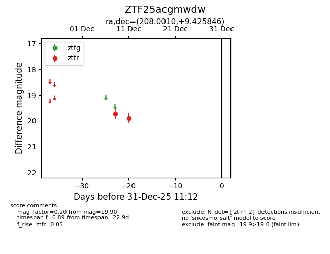
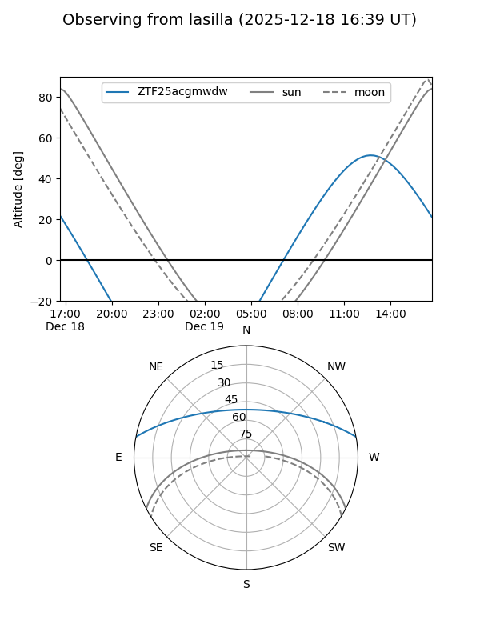
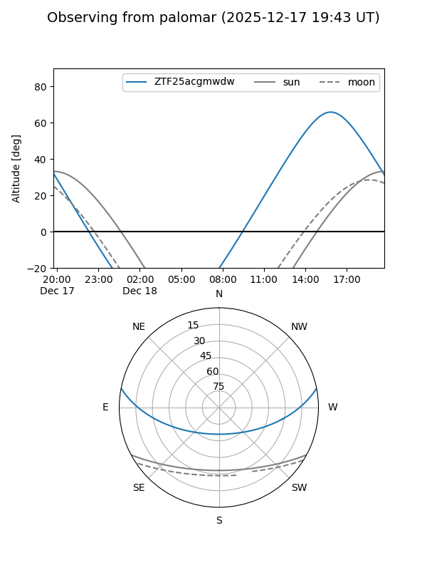

ZTF25acgmwdw
Target ZTF25acgmwdw at 2025-12-31 16:59
Aliases and brokers:
FINK:
Lasair:
ALeRCE:
alt names
ZTF25acgmwdw (ztf,fink_ztf)
Coordinates:
equatorial (ra, dec) = 208.0010,+9.42585
equatorial (HMS+DMS) = 13:52:00.25,+09:25:33.04
galactic (l, b) = (344.7063,+67.24519)
Flags:
Photometry:
last ztfr=19.90
2 ztfr detections
Lightcurve

Visibility


Additional plots